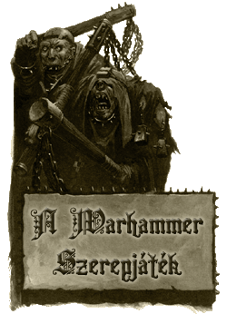

|
Warhammer
Fantasy Roleplay
Remélhetõleg található
pár érdekes anyag itt, amit mind az aktív játékosok
mind pedig a téma iránt csak érdeklõdõk szívesen
olvasnak majd!
| A
játék és ami mögötte van - A
Warhammer szerepjáték részletes
bemutatása. Mindenkinek, aki érdeklõdik
a téma iránt érdemes elolvasnia.
Gerhard
Gauner kalandjai - Részletes
bemutató a Warhammer szerepjáték
egyik legérdekesebb részé- rõl, a
fejlõdésrendszerérõl.
A gnóm
játékos karakter - Komplett
ismertetõ a gnómokról és minden segédlet
a gnóm karakterek kidolgozásához.
Valamint egy teljesen új karrier, és
egy új gnóm isten bemutatása.
Az áldozat
- Egy nagyon ötletes kalandmodul,
amely nem utolsó sorban még remekül
be is mutatja a Warhammer sötét és
borongós világát.
Karak
Azgal
- A valaha jobb napokat is megért
törpe város történetét meséli el ez a
cikk. (2nd Ed.)(New)
|
 |
A Necrarch
Vérvonal - A Necrarch vámpírok részletes
ismertetõje. (2nd Ed.)(New)
Agitátor
- Ez az írás nem túl komoly hangvételben,
de mégis részletesen mutatja be ezt a szabálykönyvben
csak szûkszavúan ismertetett foglalkozást.
Alagútharcos
- Szintén egy, a szabálykönyvben található
foglalkozás részletes ismertetése.
Elf
bestiabarátok - A bestiabarát karrier és
a kapcsolódó jártasságok teljes körû
ismertetése elfek számára.
Bérgyilkos
- A fenti két írás harmadik része, mely
ezúttal az orvgyilkos "szakmát" próbálja
némileg részletesebben bemutatni.
A tanok
mestere - Új karrier törpe fajú
karakterek számára. Teljes karrier-leírás és
egy új jártasság ismertetése.
Karnos a bestiák
ura - Az erdei alfek egyik legfõbb istenének
részletes bemutatása.
Jó játékot! - Rincewind
|